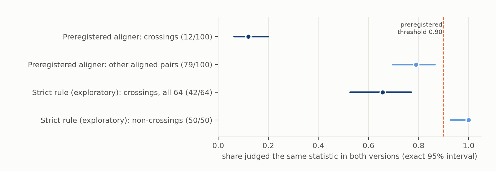
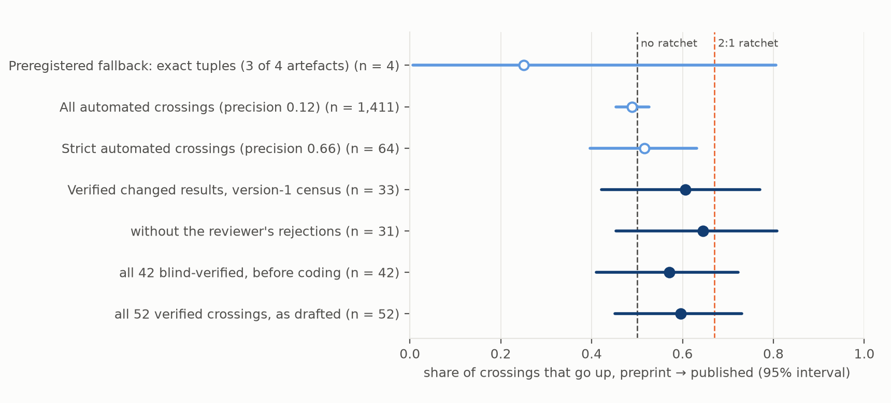

Verdict: Inconclusive. The preregistered test could not be run as intended.
What went wrong with the planned test.
- A blind check found that 88 of 100 automatically detected crossings were not the same statistic in both versions,
or were misread. That tripped the abort rule, which falls back to exact test-statistic matches.
- That fallback has 4 crossings. The rule, applied mechanically, returns Refuted.
- It is not credited. Three of the four are themselves artefacts: two are the same r = 0.092 with no degrees of
freedom matched to the wrong partner, and one is the typo p = 0.0.46 read as p = 0.
- The one real crossing goes down, and it is a correction.
What hand verification shows. A stricter, exploratory matching rule was specified in writing before it was built. Every crossing it found in the version-1 population was then checked by hand. - 33 of them are genuinely changed results: the same comparison with new data, a new analysis, or a value that changed for no stated reason. - 20 of the 33 go up (non-significant in the preprint, significant when published): 0.61, 95% interval 0.42–0.77. - That leans up, but it is consistent with no ratchet (0.50) and with the 2:1 ratchet the lead predicted (0.67). - Every sensitivity agrees: without the reviewer's rejections, with new data only, without garbled table text, and with all 52 verified crossings.
Three side results, each weaker than it first looked:
- Crossings are rare among statistics that can be matched.
- Among statistics found in near-identical sentences in both versions, about 2 to 4 per 1,000 changed significance: 1.8 by the strict route and 3.6 by the preregistered route.
- How often rewritten sentences hide a crossing is unknown, because they cannot be matched.
- Selective removal could not be tested.
- The preregistered comparison found no difference: dropped statistics were significant 81.5% of the time, added ones 82.0%.
- But most "dropped" and "added" statistics are matching failures, which dilute any difference.
- A sharper post hoc version is dominated by significance-star legends, and its sign flips with how they are excluded.
- Inconsistent p-values are carried over.
- Of at most 29 preprint statistics whose reported significance contradicts their own test statistic, 3 were consistent in the published version.
- Most flagged inconsistencies were copied verbatim, and many are one-tailed tests or rounding conventions rather than errors.
In plain terms
When scientists post a preprint and later publish the paper in a journal, some numbers change. If peer review or revision tends to nudge results over the line into "statistically significant" (p below 0.05), more results should cross into significance than out of it. We tried to measure that across more than 23,000 papers, mostly COVID-era medicine and biology, by finding each p-value in both versions and checking whether its significance changed.
The computer matching was not good enough. When we checked 100 of the changes it found, 88 were mistakes: - garbled characters ("1.0Ã10â5" instead of 1.0×10⁻⁵); - decimal commas and dots; - numbers matched to the wrong row of a table or the wrong item of a list.
Changes in significance are rare, so mistakes swamp them. Even the four "safest" cases our plan fell back on were mostly mistakes.
We then checked every candidate under a stricter rule by hand. Of 33 genuinely changed results, 20 moved into significance and 13 out of it. That tilt could be chance: the data fit both "no push" and "a strong push".
We could not tell whether non-significant results are quietly removed during revision: our comparison was swamped by matching errors and by the star footnotes ("*p < 0.05") in figure legends. Reported p-values that disagree with their own test statistic were almost always carried into the journal version unchanged.
The main lesson is about method. Automated comparisons of this kind need several safeguards; without them, the "changes" they count will mostly be their own errors: - repair the text encoding; - keep tables separate from text; - distrust p-values of exactly 0 or 1; - require degrees of freedom before matching test statistics; - check by hand.
What was asked
The lead (trust-preprint-significance-ratchet) proposed H1. Among reported statistics present in both a preprint and
its published version, those whose significance at 0.05 changes would cross upward at least two times in three:
- Supported: share up ≥ 0.67, with the lower end of a paper-level bootstrap interval above 0.50.
- Refuted: the upper end below 0.67.
Three secondaries were preregistered: - S1: dropped vs added statistics; - S2: statcheck-style consistency and its repair; - S3: exact tuple matches, and a split by server.
What was already known
Version comparisons so far work at the level of primary outcomes, point estimates or claims:
- Sommer et al. 2023, Sci Rep 10.1038/s41598-023-44291-4, medRxiv prevention preprints:
- the primary-outcome effect changed in magnitude in 27 of 161 published preprints (16.8%);
- among the 77 reporting statistical significance, none changed from significant to non-significant or back.
- Janda et al. 2022, JAMA Netw Open 10.1001/jamanetworkopen.2022.45847, 547 medRxiv clinical-study pairs:
- primary end-point definitions were concordant in 97.6%;
- their results in 81.1% (434 of 535);
- 66 of the 101 discordant pairs were in the same direction and statistically consistent.
- Bero et al. 2021, BMJ Open 10.1136/bmjopen-2021-051821, 67 COVID-19 studies: two thirds had a discrepancy between preprint and journal, commonly in numerical values and statistical significance.
- Nelson et al. 2022, Lancet Glob Health 10.1016/S2214-109X(22)00368-0: over 1,000 epidemiological point estimates in 100 matched COVID-19 pairs, with no systematic shift after review.
- Brierley et al. 2022, PLoS Biol 10.1371/journal.pbio.3001285: abstract-level changes in 7–17% of pairs.
- Yin et al. 2026, bioRxiv 10.64898/2026.06.30.735556, an LLM classification of claims in 72,644 bioRxiv pairs:
- primary claims unchanged in 39.8%, minorly revised in 50.0%, substantially revised in 10.2%;
- hedging moved toward caution twice as often as toward confidence (8.4% vs 4.2%).
- Nuijten & Wicherts 2024, AMPPS 10.1177/25152459241258945: journal adoption of statcheck is followed by fewer reporting inconsistencies.
A search on 2026-10-17 found no study of the direction of significance crossings across all reported statistics in version-matched pairs. The closest is Sommer et al.'s finding of no change in 77 primary outcomes, which agrees that crossings are rare.
How it was done
Pairs. - Source. The preprints are the 75,217 full texts in Europe PMC's preprint shards (bioRxiv, medRxiv, Research Square, Preprints.org and others). - Confirmation. Server-asserted publication links (Crossref relations, the bioRxiv API) were confirmed by title similarity (token Jaccard ≥ 0.5). That gave 28,597 of 31,261 candidates. Of the 2,664 rejected (medRxiv 1,234, Research Square 789, bioRxiv 469, others 172), the reviewer's sample of 14 suggests most are true pairs whose title was rewritten. Retitling goes with heavier revision, so the filter selects against the pairs most likely to change. - Full texts. The open-access published versions were fetched from PMC: 22,941 articles for 23,220 preprints. - Primary population. The 11,508 pairs whose preprint full text is known to be version 1. That population is Research Square 6,066, medRxiv 4,290, bioRxiv 1,040 and others 112. - Version-1 timing. In the reviewer's samples, about 0.7% of version-1 preprints were posted after their article, and 5–9% within 30 days of it, so a few are accepted manuscripts. - Contribution. 13,049 of the 23,220 pairs had statistics in the sections used. The rest had none, partly because results sections headed "Findings" or "Main" were not recognised.
Extraction. - What is taken. p-values and statcheck-style tuples (t, F, r, χ², z with df) from abstracts, results, tables and figure captions. - Removed. Boilerplate threshold sentences. - Significance. Determined only when the comparator makes it unambiguous (for example p = 0.03, p < 0.01, p > 0.1). Everything else, including p = 0.05, is undetermined. - Yield. 271,195 statistics.
Alignment. - Exact tuple matches come first. A tuple matches on test, df and value; when df is absent (52% of exact matches), on test and value alone. - Then sentences are matched one-to-one by TF-IDF with numbers masked (cosine ≥ 0.6, same section group). Several statistics in a sentence are paired by order. - 110,143 statistics were aligned.
Blind validation and abort rule (plan §6). - Sample. Before any crossing was tallied, 100 crossings and 100 other aligned pairs were drawn. - Display. Each pair was shown with the version labels hidden. - Adjudicator. The agent running the study judged whether each pair reported the same statistic, in two batch passes (44 of the rejections share one default note). - Rule. Precision among crossings had to be at least 0.90; below that, the primary falls back to exact tuple matches. - How blind it really was. Labels were hidden, but the text can reveal the order: preprint mojibake, and journal copy-editing such as "i.e.," and "Figure". Two notes show the adjudicator guessing the order, wrongly both times.
Exploratory v2 (deviations D3, D4), specified in writing before it was built. - Extraction repairs: ftfy repair of mojibake; middle-dot and comma decimals; partial eta squared no longer read as p; lost exponents undetermined. - Strict crossing. It must: - sit in abstract or results text; - be an exact tuple match or have a masked sentence cosine ≥ 0.80; - share its sentence's statistic count and its own rank with its counterpart; - not sit in a sentence that defines significance stars. - Validation. A fresh blind validation of all 64 strict crossings in the version-1 population, with the aligned statistic marked in each sentence. - Limitation. The "abstract or results text" condition is weaker than intended. In PMC XML, table and caption text is nested inside results sections and was flattened into them: 20.8% of strict-eligible pairs carry such glued text (20.1% by D5's rule; the reviewer's rule gives 20.8%).
Adversarial review (D5). An independent reviewer (Fable 5.1) re-adjudicated 124 items from the blind displays. It agreed on 121 (kappa 0.95) and rejected three that the agent had accepted: a fragment and two positional matches.
Results
The preregistered primary: not testable
The blind validation found 12 of 100 crossings correct (precision 0.12), against 79 of 100 for aligned pairs that did not cross (Figure 1). The abort rule applied.
Among exact tuple matches in the version-1 population there are 4 crossings, 1 up:
| pair | preprint | published | what it is |
|---|---|---|---|
| medRxiv 2021.02.01.21250493 | r = 0.092, p = 0.0029 | r = 0.092, p = 0.28 | two different correlations with the same r and no df, matched to each other's partner |
| same | r = 0.092, p = 0.28 | r = 0.092, p = 0.0029 | the same swap, the other way round |
| Research Square rs-823166 | F(1,44) = 0.55, p = 0.0.46 | p = 0.46 | the typo "0.0.46" read as p = 0 |
| Research Square rs-2183410 | F(2,40) = 2.42, p = 0.004 | F(2,40) = 2.43, p = 0.101 | real: a correction (F = 2.42 on 2 and 40 df gives p ≈ 0.10), down |
The rule, applied mechanically, gives Refuted: a paper bootstrap of [0.00, 0.50] over three papers, an interval that is an artefact of clustering. It is not credited, for two reasons: - the subset it falls back on is made of artefacts; - the exact interval for 1 of 4 is 0.006–0.81.
The decision was made after the result was known. It moves in the conservative direction and is disclosed (D3, D5).
The all-crossings estimate, 0.489 (0.453–0.526; 1,411 crossings in 514 papers), carries no verdict under the plan, because its crossings are 88% artefacts. The automated strict estimate, 0.516 (0.40–0.63, 64 crossings), would read "against a 2:1 ratchet" under D3's thresholds. It is not credited either, because its precision is 0.66.


Figure 1. Blind adjudication of aligned pairs. Crossings are mostly artefacts under the preregistered aligner (12 of 100) and still a third artefacts under the strict exploratory rule (42 of 64). Pairs that do not cross are mostly right.
Why automated crossings fail
The 88 rejected crossings in the preregistered sample:
| cause | count |
|---|---|
| a different statistic in the matched sentence, or a different row of a table or legend (not separated in the batch notes) | 44 |
| table or legend rows, noted explicitly | 9 |
| a different statistic, noted explicitly | 15 |
| extraction errors | 14 |
| a reordered list or shifted rank | 6 |
The extraction errors include mojibake read as p = 1 or as the mantissa, middle-dot and comma decimals read as p = 0, and partial eta squared read as p.
The review added four failure modes that also manufacture crossings: - df-less tuples matched on the statistic alone; - table cells glued to a p-value ("p = 0.424" followed by the cell "115" read as p = 0.424115); - p-values of exactly 0 or 1, almost always artefacts; - significance-star legends that pass the boilerplate filter.
A crossing needs a change in significance, and genuine changes are rare, so a crossing filter concentrates exactly these errors.
Under the strict rule, 22 of 64 crossings still failed:
| cause | count |
|---|---|
| reordered lists | 8 |
| different statistics in near-identical sentences | 6 |
| fragments too short to identify | 5 |
| typos or broken decimals read literally | 2 |
| a table row | 1 |
Verified crossings (exploratory): they lean up, the interval is wide
Coding. Each crossing judged correct was coded after unblinding, from its blind note and sentences
(results/tables/verified_coding.csv).
| code | n | up |
|---|---|---|
| changed result: new data (more patients, a replaced dataset) | 12 | 9 |
| changed result: re-analysis (a different test or model) | 13 | 7 |
| changed result: reason not visible in the sentence | 16 | 10 |
| correction or typo: a value contradicting its own sentence ("p = 0.033" beside "not significant"; ".46" vs ".046"; a star-legend typo) | 8 | 3 |
| relabelled: three values permuted across labels | 2 | 1 |
| duplicate: the same result in abstract and results | 1 | 1 |
Lead estimate. The census of changed results in the version-1 population: 20 of 33 up, 0.61 (exact 0.42–0.77; paper bootstrap 0.43–0.78; 28 papers). Its sensitivities:
| set | up / n | share | exact 95% interval |
|---|---|---|---|
| without the reviewer's two rejections in the census | 20 / 31 | 0.65 | 0.45–0.81 |
| new data only | 9 / 12 | 0.75 | 0.43–0.95 |
| all 42 blind-verified strict crossings, before coding (the coding was done after unblinding) | 24 / 42 | 0.57 | 0.41–0.72 |
| without sentences containing glued table or caption text | 16 / 27 | 0.59 | 0.39–0.78 |
| papers posted more than 30 days before publication (all 28 qualify) | 20 / 33 | 0.61 | 0.42–0.77 |
| changed results in the version-1 population, both validation samples | 23 / 37 | 0.62 | 0.45–0.78 |
| all 52 verified crossings, as first drafted | 31 / 52 | 0.60 | 0.45–0.73 |
No interval excludes 0.50 or 0.67. By the plan's thresholds, applied descriptively, all read Inconclusive.
These crossings are not a random sample of all genuine crossings. The strict rule keeps sentences that changed least, in text sections.


Figure 2. Share of crossings that go up. Hollow, light: automated estimates, mostly artefacts. Filled: verified. The lead estimate is the census of changed results. The dashed lines mark no ratchet (0.50) and the lead's 2:1 ratchet (0.67).
Secondaries
-
S1, dropped vs added (v1 extraction, version-1 population).
- 81.5% of 19,024 dropped and 82.0% of 51,978 added statistics are significant: a difference of +0.5 points (paper bootstrap −1.7 to +2.6).
- This comparison cannot detect selective removal. Most unmatched statistics are matching failures, and published table text is extracted twice, so both pools sit near the base rate whatever happens to genuinely removed results.
- Post hoc (reviewer-suggested), and uninformative. Restricting to statistics dropped from, or added to, a
sentence that survived revision gives 70.8% of 1,250 against 80.4% of 7,752 (+9.6 points, 0.6 to 18.6). But 35%
of the added and 25% of the dropped are significance-star definitions ("*p < 0.05, **p < 0.01"), significant by
construction, which journal captions carry more of. The estimate moves with how they are removed:
- without star legends, +3.9 points (−4.5 to +11.7);
- without star legends or glued text, +5.1 (−0.7 to +11.3);
- text sections only, without star legends, −9.4 (−17.6 to −0.8);
- the reviewer's own exclusions, +2.4 (−6.1 to +10.7).
It says nothing about selective removal. - S2, consistency. - Of 3,460 aligned tuple pairs, only 1,361 can be evaluated; the rest lack df. - 187 preprint tuples report a p-value outside the range implied by their own test statistic: - 153 are copied verbatim into the published version; - 52 are explained by a one-tailed p; - several follow the "p = 0.001" floor convention. - So "inconsistent" here is mostly not an error, and a verbatim copy can never be "repaired". - The subset that matters, decision inconsistencies, is at most 29, and 3 were consistent in the published version. Of the 29, 24 are verbatim copies, 3 are explicable as one-tailed tests, and several are "z" matches that are z-scores rather than test statistics. - Reported p-values that disagree with their own test statistic were almost always carried over unchanged. - S3, by server. Automated estimates only, which the validation shows are unreliable: medRxiv 0.474 (624 crossings), other servers 0.499 (748; 90% Research Square), bioRxiv 0.538 (39).
What this does and does not show
- It does not show that there is no ratchet. It shows that automated detection cannot measure one at present. Among hand-verified changed results, a 2:1 ratchet is still inside the interval.
- It does show that most automated "crossings" are artefacts, and that the failure modes are specific and fixable:
- repair the text encoding and decimal conventions;
- strip table and figure subtrees out of section text and split glued sentences;
- treat p = 0 and p = 1 as undetermined;
- filter star legends everywhere;
- require degrees of freedom (or an identical sentence) before matching test statistics;
- check reordered lists;
- measure recall, not only precision.
A large-scale claim about version-to-version significance changes built on text mining without such checks should be treated with caution. - Legitimate change. Most verified changes come with new data or a new analysis, which is what peer review asks for. A ratchet would show the direction of change, not misconduct. - Selection. - Only pairs with an open-access published version enter. - Research Square and COVID-era medRxiv dominate. - The title filter drops retitled, heavily revised pairs. - The strict rule keeps lightly edited sentences. - Adjudication. It was done by the agent running the study, with the version labels hidden, not by independent human coders. An independent model reviewer agreed on 121 of 124 items.
Process and deviations
Preregistered in plan.md (commit 8f19a76) before any statistic was extracted from real text; code was committed
before the outputs it produces. Deviations are in deviations.md:
- D1: linkage routes are not independent, so links were confirmed by title similarity; version-1 primary; no embedding model; validation by the agent.
- D2: a display change before adjudication (the sample is identical); the validation outcome and abort; a disclosure that an all-versions tally of crossing classes was printed after adjudication and before the analysis ran.
- D3: the primary reported as Inconclusive, not the mechanical Refuted; the exploratory v2 specified before it was built.
- D4: the v2 validation outcome (a census of 64).
- D5: the response to the adversarial review (
review/review.md): the fallback audit, the re-based verified estimate, reworded secondaries, corrected literature, and added disclosures. - D6: the confirmation pass (
review/confirmation.md, publish with edits): the post hoc S1 comparison is withdrawn as an artefact of star legends; "at most 29"; the blind pre-coding census added; one code aligned.
Pipeline fixes the review recommended are listed above as lessons. They are not re-run here, because the verdict does not depend on them.
Reproducing it
venv/bin/python code/parse_jats.py ... # Europe PMC preprint shards -> data/parsed/
venv/bin/python code/link.py crossref; ... confirm # candidate pairs -> data/pairs_candidates.jsonl (released)
venv/bin/python code/fetch_published.py # PMC OA full texts
venv/bin/python code/pipeline.py # preregistered extraction + alignment -> data/aligned/
venv/bin/python code/validate_alignment.py sample # blind sample; adjudication in results/tables/alignment_validation_raw.csv
venv/bin/python code/validate_alignment.py merge
venv/bin/python code/analysis.py # results/tables/primary.json
venv/bin/python code/pipeline_v2.py # exploratory -> data/aligned_v2/
venv/bin/python code/validate_v2.py sample; venv/bin/python code/validate_v2.py merge
venv/bin/python code/analysis_v2.py # results/tables/exploratory_v2.json
venv/bin/python code/supplementary.py # results/tables/supplementary.json, verified_crossings.csv
venv/bin/python code/review_response.py # results/tables/review_response.json (uses verified_coding.csv)
venv/bin/python code/figures.py
Released in results/tables/:
- the confirmed pair list, with sha256;
- both adjudication files, with their keys merged;
- the verified crossings and their coding;
- all result JSONs.
The validation samples quote single sentences from the papers. They are regenerated exactly by the seeded scripts from the open full texts and are not redistributed.